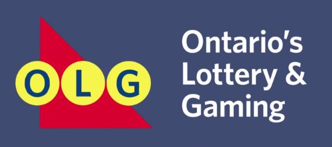

FOUR YEARS of combined experience in product management, project maangement and business analytics with a focus on developing web applications and facilitating large-scale business transformation. Experience spans various industries such as Casinos & Gambling, Retail, Education, Real Estate and Information Technology.
Technical
Product/Project Management
Trello, MS Project, and PowerPoint
Product Design
Sketch App, InVision, Axure, HTML, CSS, JavaScript
Data Analysis
MS Excel, PL/SQL, Google Analytics, and Tableau
Education
Scrum Alliance
Certified Scrum Product Owner
Toronto, ON
August 2016
Certified Scrum Product Owner
Toronto, ON
August 2016
The University of Waterloo
Bachelors of Arts,
Honours Economics,
Finance Specialization
Waterloo, ON
Sept 2008 - Apr 2013
Bachelors of Arts,
Honours Economics,
Finance Specialization
Waterloo, ON
Sept 2008 - Apr 2013
Work Experience
Business Systems Analyst / Product Owner
Government of Ontario – Enterprise Business Intelligence & Data Collection
Toronto, ON | Dec 2014 - Present
Government of Ontario – Enterprise Business Intelligence & Data Collection
Toronto, ON | Dec 2014 - Present
- Product SME for the launch of a new data collect platform on an aggressive 4-month product launch and 2x user base and new tech stack; main point of contact for our client ministry, test team, developers
- Managed stakeholder engagements through product vision development, user story planning, and addressing client pain points; led executives through product pitches resulting in additional $80,000 of funding
- Designed the entire data platform while incorporating UI/UX design aspects such as dynamic calculations, workflows, and enhanced visuals which received executive praise and reduced reporting time by 1.5 hours
- Triaged 20+ critical defects by assessing technical solutions with developers and coordinating script fixes; implemented change management processes which decreased resolution time by 33%
- Prioritized product backlog for phased releases throughout the 2016-17 academic year
- Managed one direct report; established career development plan, status updates and work allocation
- Hired and on boarded 4 project resources including a project manager, two business analysts and QA Tester
Software: Axure, MS Project, PowerPoint, MS Excel, PL/SQL
Project Analyst
Ontario Lottery & Gaming Corporation (OLG) – Modernization Program
Toronto, ON | Jan 2014 - Present

Ontario Lottery & Gaming Corporation (OLG) – Modernization Program
Toronto, ON | Jan 2014 - Present
- Led customer insights driven analysis on OLG’s loyalty program and discovered spending plateaus for each level of rewards customer which uncovered $350M in sustainable revenue annually
- Worked closely with executive team to develop an enhanced governance model; created role matrixes, redesigned process diagrams and program profiles which successfully transformed OLG’s organizational structure
- Led the roll out of new governance processes for the Gaming Program Vertical; coached 8 PMs across 14 projects on quality control measures and schedule integration which decreased PMO reporting by 4 hours weekly
- Aligned the project schedule for the strategic procurement ($50M+) of gaming and lottery service providers; analysis uncovered redundant processes which reduced the project timeline by 1 month
- Analyzed key performance indicators (KPIs) such as net present value (NPV), return on investment (ROI), cost variances, estimate at completion (EAC) and milestone completion for the Strategic Vendor Procurement project (50M+)
Real Estate Analyst
City of Toronto – Real Estate Services
Toronto, ON | Apr 2011 - Sept 2013
City of Toronto – Real Estate Services
Toronto, ON | Apr 2011 - Sept 2013
- Implemented a municipal-wide strategy to revive and settle politically sensitive files and resolve outstanding accounts
- Conducted a business feasibility study of a high-profile site by analyzing appraisal data and forecasting revenue
- Developed and implemented a discounted cash flow process to reconcile and uncover operating cost variances, which lead to the successful identification of $220K in outstanding revenue
- Worked closely with the Toronto Transition Commission (TTC) to elicit stakeholder requirements and negotiate terms and conditions to develop multiple construction contracts for the Leslie Street Connection Track
Junior Risk Analyst
Ontario Ministry of Finance – Risk Assessment & Electronic Auditing
Pickering, ON | June 2010 - Aug 2010
Ontario Ministry of Finance – Risk Assessment & Electronic Auditing
Pickering, ON | June 2010 - Aug 2010
- Implemented a confidential tax mitigation initiative in preparation for the harmonization of sales tax (HST)
- Designed an effective risk mitigation process that incorporates cross referencing of reported financial tax metrics
- Analyzed key risk metrics of business vendors resulting in the successful identification of $200K in tax evasion